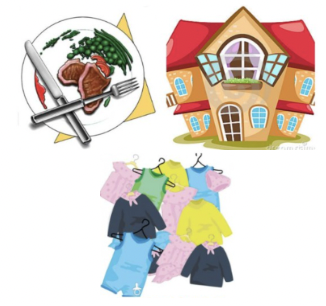
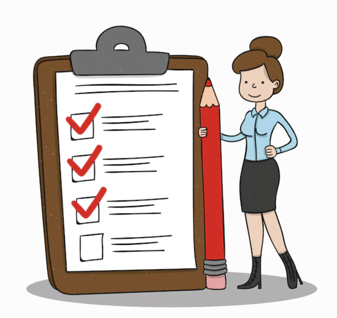

Lesson: Live Below Your Means
Differentiate Between Needs and Wants
Spending money only on needs and not wants is a common personal finance strategy that focuses on financial stability and long-term goals. Being able to differentiate between wants and needs is essential for managing finances, making informed decisions, and leading a balanced life.

Needs are essential for survival and maintaining a basic standard of living. Without them, your well-being or safety could be at risk. These are the things you must have to function in your daily life.
- Food and water: Essential for survival.
- Shelter: A safe place to live.
- Healthcare: Medical care to stay healthy.
- Clothing: Adequate clothing for warmth and protection.
- Transportation: Necessary for getting to work or important obligations.
- Basic utilities: Electricity, water, and heat.
 Wants are non-essential items or services that enhance comfort, enjoyment, or convenience. They are things you desire but can live without, even if they provide pleasure or luxury.
Wants are non-essential items or services that enhance comfort, enjoyment, or convenience. They are things you desire but can live without, even if they provide pleasure or luxury.
- Dining out: Food is a need, but eating at a restaurant is a want.
- Luxury items: Expensive gadgets, designer clothing, or high-end cars.
- Entertainment: Movie tickets, concert events, or video games.
- Vacations: Travel for leisure.
- Subscription services: Streaming platforms, magazine subscriptions and other such services.
Practical Ways to Differentiate
1. Ask Questions:
- Is it essential for my survival or well-being? If yes, it’s likely a need. If no, it’s a want.
- Can I live without it? If you can go without it and still live comfortably, it’s probably a want.
- Does this improve my life quality or is it necessary for functioning? A need is something that sustains basic life quality, while a want may just enhance enjoyment or convenience.
2. Short-Term vs. Long-Term Perspective:
Needs typically address immediate, foundational concerns like food and housing, while wants address longer-term desires or preferences for comfort and lifestyle upgrades.
3. Consequence of Not Having It:
- If not having it threatens your well-being or security, it's a need (e.g., not having housing or healthcare).
- If not having it only affects comfort or lifestyle (e.g., not having the latest smartphone), it's a want.
Live Below Your Means

The lesson to learn from spending primarily on needs and limiting spending on wants revolves around building financial discipline, stability, and long-term security. Here are the key takeaways:
- Financial Prioritization: Focusing on needs teaches you to prioritize essential expenses, like food, shelter, healthcare, and education. This ensures that your basic requirements are always covered, and help you save money for the future which leads to financial security. By being selective about what you spend money on, you develop better financial habits. You learn to distinguish between what truly adds value to your life (needs) and what may be short-lived or impulsive (wants). This encourages thoughtful, intentional spending.
- Avoiding Impulsive Spending: Wants are often driven by emotions or impulses, like buying the latest gadget, fashionable clothing, or dining out frequently. Spending primarily on needs teaches financial discipline, helping you resist impulse buying and encouraging thoughtful, intentional spending.
- Avoiding Debt and Financial Stress: Spending excessively on wants can lead to debt, especially if credit cards or loans are involved. When you prioritize needs, you reduce the risk of taking on unnecessary debt, which can lead to long-term financial stress.
- Achieving Long-Term Goals and Financial Freedom: Limiting wants allows you to focus on saving for larger, long-term financial goals, such as buying a home, paying off debt, starting a business, or funding retirement. These goals create lasting value and help you achieve financial independence. Spending less on wants allows you to have greater control over your finances. It gives you the freedom to make financial decisions and this flexibility enables you to pursue opportunities like investing, starting a business, or traveling.
- Living Within Your Means Living within your means by focusing on needs encourages a more sustainable and minimalist lifestyle. You buy only what you need, reducing waste and excess consumption. This often leads to more contentment and appreciation for what you already have. A disciplined approach to spending teaches you to live below your means, which is one of the cornerstones of financial independence.
Don’t Get FOMO’d: How to Avoid Overspending
Have you ever felt the pressure to buy something just because everyone else has it? That’s **FOMO** (Fear of Missing Out), and it’s one of the easiest ways to blow through your budget. Here are some ways to resist:
- Wait Before You Buy: Give yourself 24 hours to think about big purchases. Do you *really* need it, or was it just a moment of weakness?
- Stick to Your Budget: Once you know how much you can spend on wants, stick to it. It feels way better to have money saved for things you actually care about.
- Price Hunt: Always compare prices before buying. Sometimes the best deals are just a click away.
- Avoid Debt Traps: Don’t treat credit cards like free money. It’s super easy to fall into a trap and overspend.
Beware of Lifestyle Creep
 “Lifestyle creep — also known as lifestyle inflation — is the gradual increase in your discretionary spending as your income rises,” writes Erin Gobler, a Wisconsin-based personal finance writer.
Nearly half (49%) of Americans earning more than $100,000 say they are living paycheck to paycheck, according to MarketWatch.
“Studies have shown time after time that living paycheck to paycheck has very little to do with income levels but rather with spending levels,” Bobbi Rebell, founder of Financial Wellness Strategies, told MarketWatch.
Lifestyle creep can be difficult to reverse, so many finance experts suggest getting ahead of the problem before it gets out of control. The first step is understanding your current financial situation by examining your lifestyle and adhering to a budget. Refer to Budgeting section to learn more.
“Lifestyle creep — also known as lifestyle inflation — is the gradual increase in your discretionary spending as your income rises,” writes Erin Gobler, a Wisconsin-based personal finance writer.
Nearly half (49%) of Americans earning more than $100,000 say they are living paycheck to paycheck, according to MarketWatch.
“Studies have shown time after time that living paycheck to paycheck has very little to do with income levels but rather with spending levels,” Bobbi Rebell, founder of Financial Wellness Strategies, told MarketWatch.
Lifestyle creep can be difficult to reverse, so many finance experts suggest getting ahead of the problem before it gets out of control. The first step is understanding your current financial situation by examining your lifestyle and adhering to a budget. Refer to Budgeting section to learn more.
Let's Practice What You Learned!
Go Back!